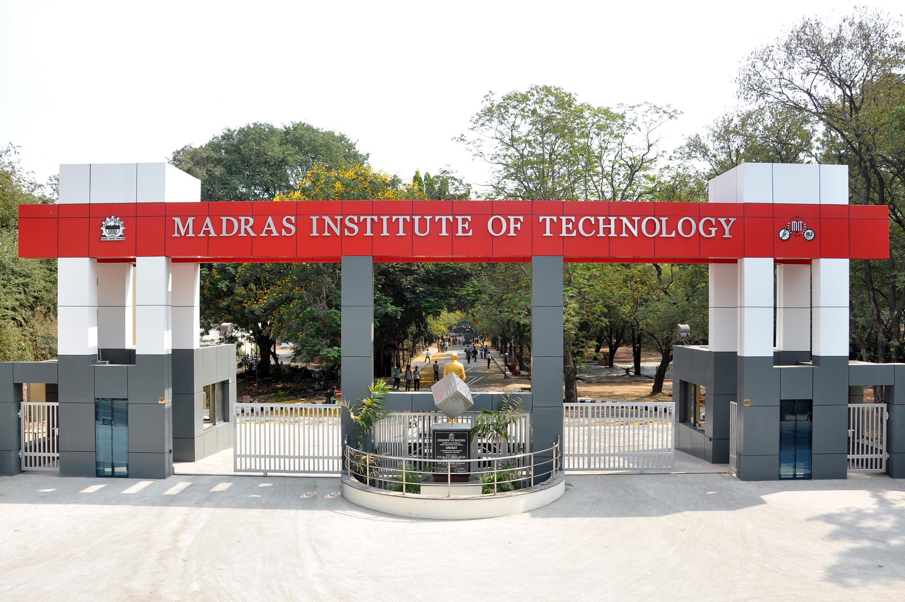

Welcome
Introduction
Hello!My name is D.velan
I am passionate about learning and exploring new opportunities in academics and beyond. From my early school days to my current college journey, I have been dedicated to excelling in both academics and extracurricular activities.
I completed my schooling at AKT ACADEMY MATRIC HIGHER SECONDARY SCHOOL, where I developed a strong foundation in subjects like Mathematics, Science, and English.Currently, I am pursuing my degree in b.tech Information Technology at Madras institue of technology
SCHOOL LIFE
The roots of education are bitter, but the fruit is sweet.
Welcome! I am Glad u are Interested to hear My School life.I learned lot of things in my school . I attended many sports events,extra curricular activities.My family is poor so I worked hard to study but also I enjoyed with my friends.I am Studied in Shri maruthi vidyashram matric School up to 10th Statndard and then finished My higher secondary study in A.K.T academy higher secondary School.
SMV School
Teachers are very supportive in previous school(SMV) for my study because they know my sitiation finally I finished well my 10thstandard after that AKT school offer me a oppertunities to study in that school for low fees i accept and join that school I was very happy to join that school becouse in my district that is the top 1 school and also very rich school .

A.K.T Academy matric higher secondary school
In this school also I studied well .I'm days scholar for one year and hosteller for one year in this school.First time I stayed and studied in hostel that gaves me a new environment .I learn many things in hostel .In my school history on the first time farewell day is conducted in our batch only.In 900 students i am the school boys first in eleventh standard then finished my 12th standard with good marks and good cutoff.
College life
College is the reward for surviving high school.
Madras institute of technology
Welcome! I am Glad u are Interested to hear My College life.I learned lot of things in my college .College life is an exciting and transformative experience for students, offering a unique blend of academic challenges, personal growth, and social opportunities. It's a time of self-discovery, where students explore new subjects, develop critical thinking skills, and form lifelong friendships. The campus becomes a hub of diverse activities, from clubs and organizations to sports and social events, encouraging students to balance their studies with fun and networking. College also teaches independence, time management, and responsibility, as students navigate their way through deadlines, exams, and living away from home for the first time. Ultimately, college life is a stepping stone to both personal and professional development, providing memories and experiences that shape the future.
Comparison of School and College Life
| Aspects | School life | College life |
|---|---|---|
| Subjects | Math, Science, English,Biology | IT essentials, c programming |
| Extracurricular Activities | sports,drawing | coding competition,sports |
| Achievements | Top ranker in school | participating in technical events |
Milestones
- got school first in 10th
- Completed high school with distinction.
- Secured admission to MIT Anna University.
- Participated in technical events.